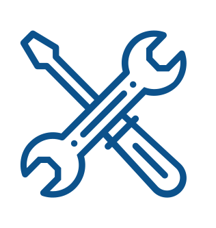

PHỤ TÙNG & PHỤ KIỆN
Khi đặt mua phụ tùng, Quý khách hãy luôn chọn phụ tùng chính hiệu Hyundai Mobis bởi vì:
- Chất lượng đáng tin cậy về mặt kỹ thuật, an toàn cũng như hiệu quả kinh tế.
- Phụ tùng chính hiệu luôn luôn tương thích với xe của Quý khách, kể cả những chi tiết nhỏ nhất. - Phụ tùng chính hiệu đã được kiểm tra về mặt chất lượng.
- Phụ tùng chính hiệu Hyundai - Mobis chỉ được cung cấp thông qua mạng lưới đại lý ủy quyền dịch vụ.
Làm thế nào để biết phụ tùng chính hiệu
- Bao bì đóng gói cho phụ tùng chính hiệu Hyundai - Mobis không chỉ bảo đảm an toàn trong quá trình vận chuyển mà còn là cơ sở cho việc chống lại hàng giả mạo. Bao bì ấy được phân biệt thông qua thiết kế đặc biệt và nhãn phụ tùng thống nhất.
- Khi phụ tùng còn nguyên vẹn chưa mở ra sử dụng, một tem chống hàng giả vẫn còn niêm phong trên bao bì của phụ tùng đó. Một số phụ tùng phải có tính an toàn cao như lọc nhớt, bố thắng, hay là lọc gió và nó phải được thay thế đúng theo định kỳ quy định.
- Một khi bao bì đóng gói cho phụ tùng đã mở ra thì tem chống hàng giả cũng sẽ bị rách và không thể sử dụng lại được. Vì vậy khi Quý khách mua phụ tùng chính hiệu thì điểm đặc trưng luôn luôn có đó là tem chống hàng giả phải còn nguyên vẹn
Phụ tùng chính hiệu - Phụ tùng giả mạo
- Phụ tùng giả mạo có thể mua được
- Những người làm hàng giả mạo không chỉ dừng lại ở những phụ tùng thay thế: Hàng giả mạo chính hiệu Hyundai - Mobis có thể tiêu thụ (mua) trên thị trường.
Phụ tùng chính hiệu - Những thắc mắc
Để cung cấp đến quý khách các thông tin phụ tùng chính hiệu một cách chính xác, quý khách vui lòng điền đầy đủ thông tin trong mẫu yêu cầu báo giá và gửi cho chúng tôi. Ngay khi nhận được các yêu cầu của Quý khách chúng tôi giải quyết và sẽ liên lạc lại nhằm thỏa mãn các yêu cầu của quý khách một cách hoàn hảo.
Lốp Nexentire chính hãng:
|
|

|
|
|
BẢO HÀNH UY TÍN
|
CÔNG NGHỆ TIÊN TIẾN
|
GIẢI THƯỞNG QUỐC TẾ
|
|
Chế độ bảo hành hiện có của NEXEN tốt nhất trong ngành công nghiệp lốp hiện nay. Chúng tôi cam kết đem đến cho khách hàng một cơ chế đảm bảo tối đa các giá trị khi mua hàng, giảm thiểu rủi ro, mang lại cảm giác an tâm và thoải mái khi lái xe trên đường.
|
NEXEN tự hào là doanh nghiệp tiên phong trong phát triển dòng lốp xe hình chữ V đầu tiên tại Hàn Quốc, bằng chứng thể hiện ở việc ứng dụng công nghệ tiên tiến và hàng ngàn giải thưởng sáng tạo mà chúng tôi đã đạt được.
|
NEXEN cung cấp các sản phẩm không chỉ vượt trội về tính năng sử dụng mà còn xuất sắc trong thiết kế. Chúng tôi trở thành công ty lốp xe ĐẦU TIÊN đạt cả bốn giải thưởng về thiết kế hàng đầu thế giới: IDEA (2014), G-Mark (2013), Dot Design (năm 2012) và IF Design (2011)
|